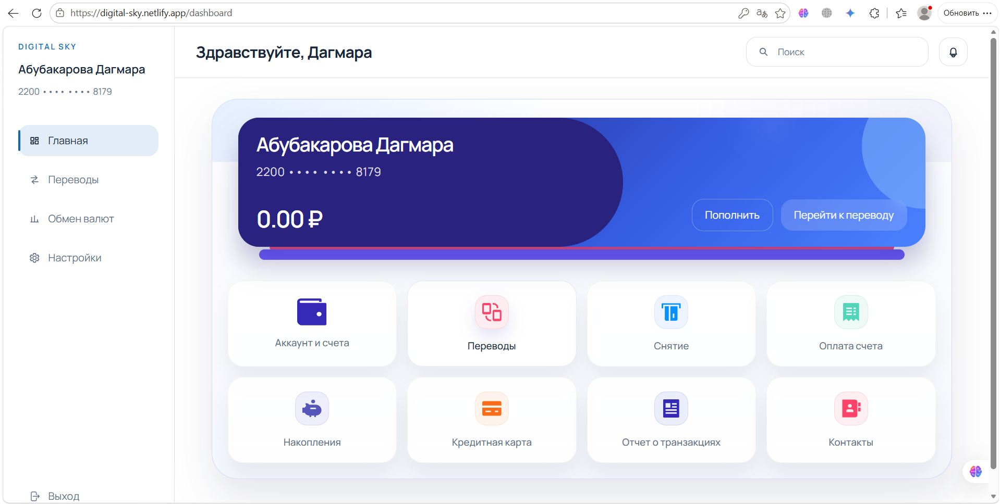

Не эмитент
Платформа не выпускает цифровые рубли, юани или другие государственные цифровые валюты.
Концепция международной расчётной платформы, где самостоятельные цифровые валюты взаимодействуют через общие технологические протоколы.
Digital Sky проектируется как технологическая инфраструктура для международных банковских операций. Центральные банки продолжают отвечать за собственные цифровые валюты, коммерческие банки — за обслуживание клиентов.
Платформа не выпускает цифровые рубли, юани или другие государственные цифровые валюты.
Проект не предполагает переноса денежно-кредитных полномочий национальных регуляторов.
Главное направление исследования — межбанковская координация валютных обязательств.
Стандартизированный обмен финансовыми сообщениями и связь с существующими банковскими системами.
Проверка условий, согласование готовности сторон, валютные параметры и запуск PvP-сценария.
Запись расчёта в реестре и уведомление сторон — согласно проектному алгоритму.
На уровне пользователя — импортёр и экспортёр. На уровне денежной инфраструктуры — национальные и коммерческие банки.
Инициирует перевод в национальной цифровой валюте.
Предоставляет доступ к платёжному сервису и обслуживает клиента.
Управляет национальной цифровой валютой и соответствующим узлом.
Координирует сообщения, проверки и согласованное исполнение.
В презентации клиент инициирует перевод через мобильный банк. В дипломе дополнительно приведены экраны самостоятельного пользовательского интерфейса Digital Sky. Оба подхода представлены как проектные варианты; их окончательные роли предстоит разграничить.

Интерфейсный прототип из дипломной работы, рис. 2.3
В расширенном исследовании Digital Sky проектируется по модели взаимосвязанных ЦВЦБ. Интеграционные шлюзы должны соединять системы, сохраняя полномочия их национальных операторов.
Центральные банки стран-участниц и коммерческие банки-операторы. Национальные платформы ЦВЦБ сохраняют собственный контроль.
Межсистемная коммуникация, расчёт по принципу PvP, атомарные свопы и предусмотренная логика смарт-контрактов.
Стандартизированные API, взаимодействие с банковскими системами, AML/KYC-проверками и клиентскими интерфейсами.
Пройдите интерактивный сценарий от заявки импортёра до проектного подтверждения расчёта.